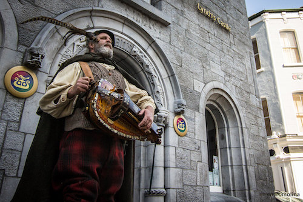

One of the major involvement between the early form of Hurdy-gurdy, the organistrum, and the Hurdy-gurdy today is the way the keys are placed. The organistrum player had to change the pitch by "pulling" the keys rather than "pressing" them. The piano as we know would make a sound when the keys are pressed down. Imagine the opposite: a piano that produces sound by pulling up on the keyboard. This is a very strange way of playing, picking up each key and pulling it up, but this was the way the organistrum played. As you can imagine, Pulling keys upward is cumbersome and it is not practical to play fast passages in this way, so only slow tunes like religious music could be played on the organistrum.
In order to solve the inconvenience caused by this structure, the Hurdy-gurdy has evolved to change pitch by pressing down on the keyboard. Besides, the overall size of the instrument was reduced, allowing it to produce higher notes and to be played solo. This made it an ideal instrument for folk music. Eventually it left the cloister altogether and became firmly established as a minstrel instrument. Its spread was facilitated by the wandering players who found employment in increasing numbers as court and town life flourished and the church began to accept their participation in religious processions and similar events. In this way the hurdy-gurdy insinuated itself into every level of Western society from palace to village green. It was used as a melodic instrument in dance music, especially during festivities and church holidays; it was found in the ‘orchestra’ at mystery plays; it was played by pilgrims and above all by itinerant minstrels, peasants, beggars and blind musicians.